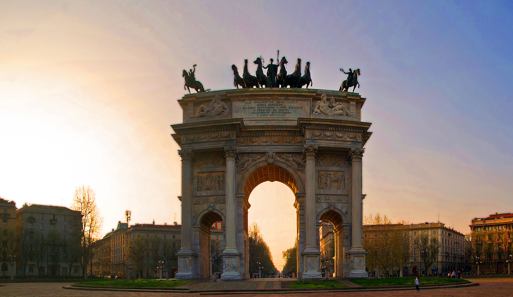

Simplon Gate
Porta Sempione ("Simplon Gate") is a city gate of Milan, Italy. The name is used both to refer to the gate proper and to the surrounding district, a part of the Zone 1 division (the historic city centre), including the major avenue of Corso Sempione. The gate is marked by a landmark triumphal arch called Arco della Pace ("Arch of Peace"), dating back to the 19th century, although its origins can be traced back to a gate of the Roman walls of Milan. The gate is located at the center of a wide round square known as Piazza Sempione ("Simplon Square"). It is neoclassical triumphal arch, 25 m high and 24 m wide, decorated with a number of bas-reliefs, statues, and corinthian columns. Bas-reliefs and statues are made of a variety of materials, including marble, bronze, wood, and stucco. Many of such decorations, especially bas-reliefs, are dedicated to major events in the history of Italy and Europe, such as the Battle of Leipzig, the foundation of the Kingdom of Lombardy-Venetia, the Congress of Vienna.
Porta Sempione ("Simplon Gate") is a city gate of Milan, Italy. The name is used both to refer to the gate proper and to the surrounding district, a part of the Zone 1 division (the historic city centre), including the major avenue of Corso Sempione. The gate is marked by a landmark triumphal arch called Arco della Pace ("Arch of Peace"), dating back to the 19th century, although its origins can be traced back to a gate of the Roman walls of Milan. The gate is located at the center of a wide round square known as Piazza Sempione ("Simplon Square"). It is neoclassical triumphal arch, 25 m high and 24 m wide, decorated with a number of bas-reliefs, statues, and corinthian columns. Bas-reliefs and statues are made of a variety of materials, including marble, bronze, wood, and stucco. Many of such decorations, especially bas-reliefs, are dedicated to major events in the history of Italy and Europe, such as the Battle of Leipzig, the foundation of the Kingdom of Lombardy-Venetia, the Congress of Vienna.
